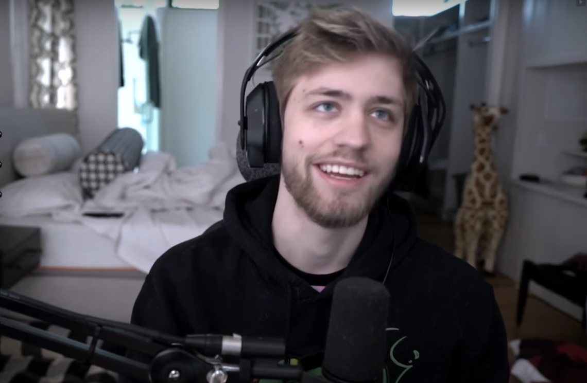

Daniel "Dafran" Franchescha offers coaching services for pretty much any FPS or "first person shooter" game. Reccomended for Valorant or Overwatch. He has achieved Rank 1 in the world in Overwatch and is currently at the highest rank in Valorant.
Chance "Sodapoppin" Morris offers specilized coaching for the MMO "World of Warcraft" He has achieved .05% in the PVP (player vs player) ladder multiple times.
Felix "xQc" Lengel offers coaching services in Overwatch. He has reached top 500 in the NA ladder many times.